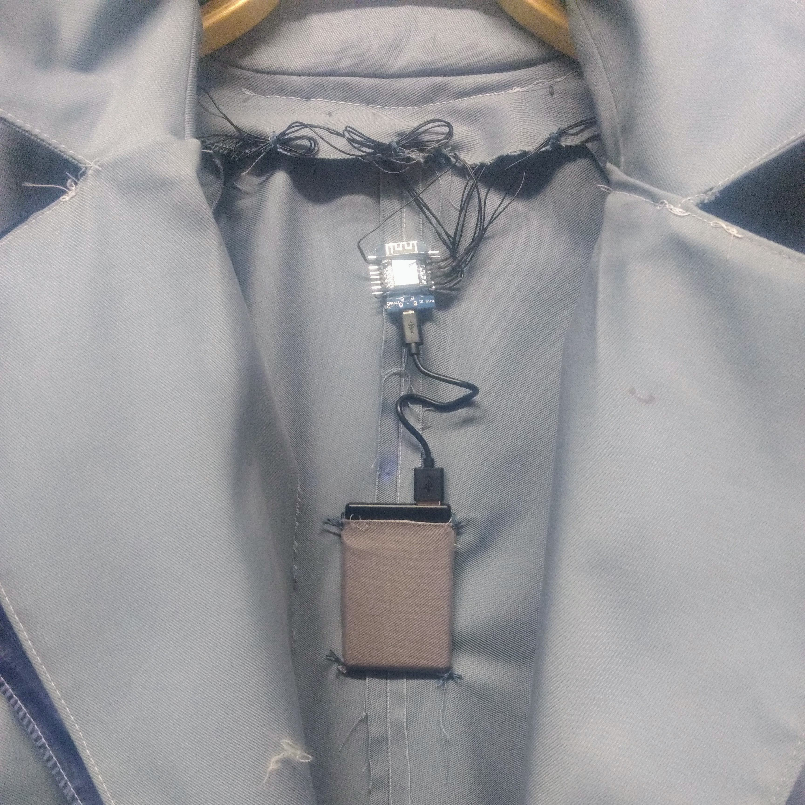

Klang, Kleidung
is an interactive sound installation about the interconnectedness
of humankind no matter where they come from, what they look like, their age, gender,
religion, etc.
Klang, Kleidung consists of a room full of sound and light and four large coats which
visitors of the exhibition can slip into and explore. The stitched patterns combine
organic elements such as body parts, plants and waters into a single stream that reflects
the history of humankind. The carpet on which we move is a reminder of 1001 Nights and unites
everyone in a common garden that we share.
Whoever wears one of the coats will hear a melody and tell a story, which is composed by
oneself. Via sensors and microcontrollers, which are hidden in the lining of the garments, as
well as an Ableton Live arrangement, the movement and interaction with other visitors is
transformed into light and sound. The more intense the movements and the closer we get to the
other person, the more the composition becomes alive. Together we become an orchestra.
The body as a point of origin and transition for the interaction. It is the human body and
the spaces in which it moves. In a garden we all share. Space emerges between us, the body
itself always as the center. Let's make the space smaller and listen to how we move towards
each other, caressing and creating a sound together. The garden of encounters to realize
how similar we are to each other.
The human being at the center.
